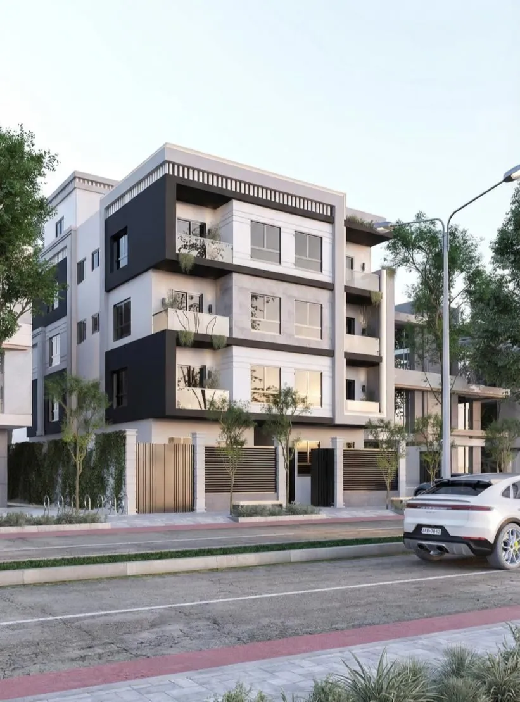

01 — Project Overview
A 150,000 m² community across three typologies.
La-Mer Compound is a large-scale residential community of 30+ structures spanning three typologies — villas, apartments and townhouses. The full-scope BIM development was managed at LOD 350+, coordinating Architectural, Structural and MEP disciplines across the entire community.
02 — The Challenge
Consistency at scale, across typologies.
Coordinating 30+ structures across three distinct typologies — each with its own unit mix and services layout — while keeping every discipline's model in sync was the central challenge. At this scale, an uncoordinated model doesn't just risk one clash; it risks the same clash repeated across dozens of units.
03 — Design Approach
Typology-based modeling, continuous coordination.
Each typology — villa, apartment, townhouse — was modeled and coordinated as its own workstream at LOD 350+, with continuous Architectural/Structural/MEP coordination running throughout rather than as a single end-of-phase check.
04 — BIM Workflow
05 — Visual Development
Representative BIM output from the same workflow.
Specific renders for La-Mer Compound are not included in the current portfolio material. The plates below are representative BIM deliverables — modeling, documentation and coordination — from the same LOD 350+ workflow used on this engagement.


06 — Technical Delivery
LOD 350+, discipline by discipline.
- LOD 350+ modeling across all typologies
- Architectural / Structural / MEP coordination
- Navisworks clash testing and resolution
07 — Outcome
Zero construction-phase conflicts.
Full-scope BIM development (LOD 350+) was delivered for the 150,000 m² community across 30+ structures and 3 typologies, with Architectural, Structural and MEP disciplines coordinated to zero construction-phase conflicts.